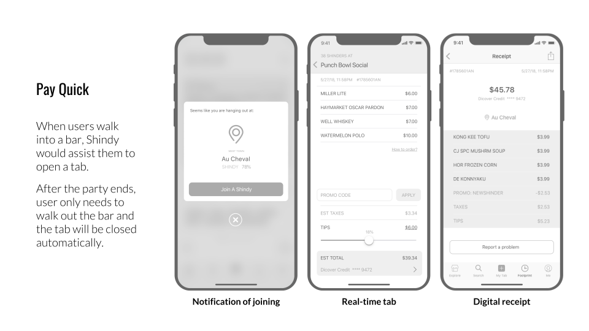
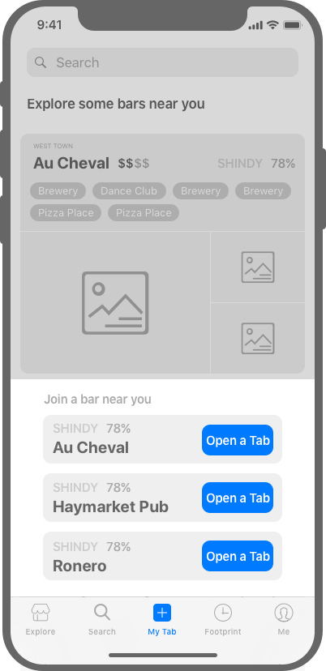
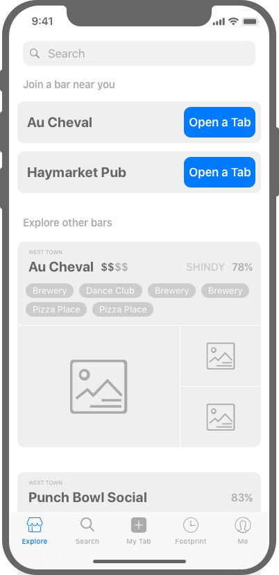
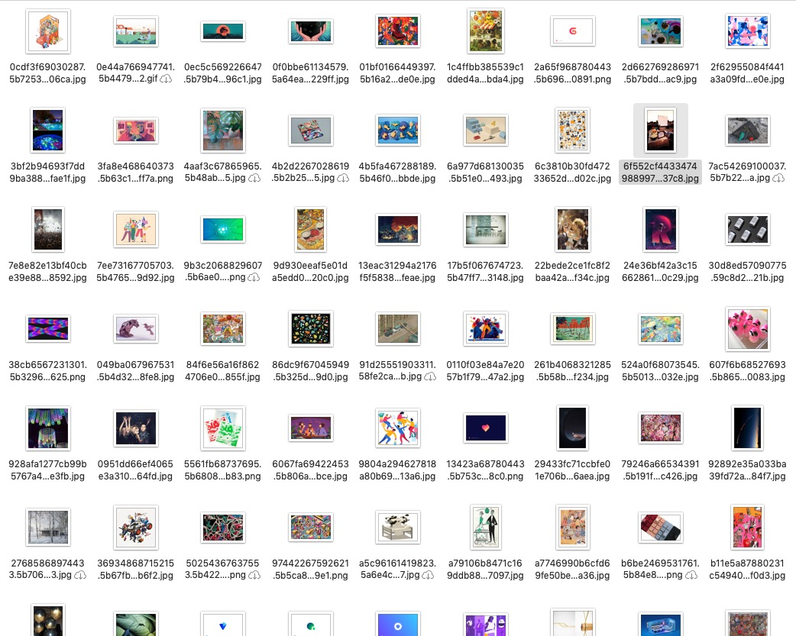

Ι TOPIC SOURCE
2018 Entrepreneur Project,
Shindy Tech.
LLC
Ι Founder/CEO
Matthew Marks
Ι ADVISOR OF SECONDARY RESEARCH
John Cain
Ι TEAMMATES
Jinjia Huang, Yachu(Charlie) Feng
Ι PROJECT LENGTH
from Mar 2018
DESIGN BRIEF
—
Shindy
shin·dy | [ ʃɪndi ]
NOUN
1. A large, lively party.
Shindy is a startup project initiated by a developer - who used to work as an alcohol rep for 8 years. He wishes he could provide a mobile payment app for bar customers - to replace the old routine with credit cards or cash.
So here comes Shindy, a digital payment solution targeted at the bar industry. We are aiming to build a smooth and enjoyable experience for bar-lovers as well as bar-tenders.
This is a design of an entire B2C mobile app for a startup. My job is to be the Design Lead who is in charge of the end-to-end design process.
* The beta version is scheduled to release in Apr 2019 in App Store.
VALUE OF DESIGN -
WHAT DOES A DESIGNER MEAN FOR A TECH STARTUP?
—
TASK
Design a mobile app for digital checkout at bars.
Design a better checkout experience for customers and bars.
When I had my first onboarding meeting with the founder, I find him clueless about what a design process looks like. Either did he undertand the value of design. He is confident about the profit model while he could not answer why users would buy in his concept.
So I spent some time help him understand that design is more than interfaces, and why it's more than interfaces.
For Non-designers:
For Designers:
An App
= An Idea
+ Few Functions
+ Several Interfaces
+
Development Skills
For example: This is the initial Design Proposal from the founder. He already has a vision of the app which make sense to him but not make sense to users.
An App
= A Solution to A Problem
≈ Understand Context
Study the market and trends
Know your competitors
Aim in the market
+ Understand Users and Stakeholders
Identify target users
Understand user journey
Discover pain points
Understand users' expectations
+ Design for A Product (Experience / Service / Systems)
Experience Design
Information Architecture
Wireframes and Interfaces
Branding and Visual Identities
Prototypes and Validations
Design Objective
With the support of Research, Market Analysis and Business Model, we were able to decide on the main objective for this product. You canfor more details.
Create a mobile payment product that could provide frictionless experiences for bar customers to enjoy and connect.
USER JOURNEY - UNDERSTAND USERS AND STAKEHOLDERS'S CURRENT EXPERIENCE
—
User Journey Mapping
Better Understand User's Bar Experiences, Identify Current Pain Points and Frictions for Bar Customers
To understand users experience as well as ups and downs, we did Field Research, Observations, Inquiries, and Interviews with our stakeholders. The result is mapped out in a diagram.
Some of the major pain points for customers are about:
Limited Support on Bar Exploration
Substandard Service at Busy Times
Tedious Check Out Process
The Intricacy of Spliting a Tab with Friends
Ι Hover to see opportunity areas
Better Understand Bar and Bartender's Practice and Concerns
We did similar things with bar owners and bartenders as well. Other than learning about their daily work, we focus on their thoughts and concerns with mobile payment products, especially with bars who had former experience with that.
Major concerns for bar and bartenders are about:
Maintain Service Quality Especially at Busy Times
Have Customers and Orders Right
Receive Reasonable Tips
Deal with Unexpected Customers and Orders
ANALYSIS & SYNTHESIS -
—
Decision Making - Our Product Positioning
BRAND
Shindy
Love the night more.
Shindy allows you to enjoy your bar time with your friends.
VALUE PROPOSITION
Enjoy + Connect
Shindy provides a digital experience for bar customers that includes not only an effortless payment solution but also more chances to interact with bars and your friends. Unlike other local search service. Shindy is a place for genuine bar lovers.
EXPERIENCE
Digital Payment + Social Interaction
- Explore the most popular bars nearby. Find the right one for
you. Check out deals, shindy ratings, and people's comment among them.
- Enter the bar and discover more: what is the most popular shot here, and who just
bought people around.
- Just enjoy your drink and have fun with friends! Shindy will take care of your tab
from now.
DELIVERY
An App enables bar customers to explore bars and pay their tabs in a better way.
- Introduce and recommend bars in a more professional way - a
Shindy way.
- Real-time tracking of your own tab and have fun of real-time interaction at bars.
- Low learning curve. We protect and encourage the genuine interaction between
customers and bar staff.
- Effortless payment solutions which means no check-out
needed. Split your tab with friends with few clicks.
- No burden or extra workload for bar staff. We care a lot about our business partners.
EXPANDING & SCOPING
—
Storyboard - What are We Envisioning
We did a lot of ideation, widely and boldly. We also captured our sparkles of inspirations throughout the whole process. And gathered them all together at this point. With the structure settled, and ideas generated, we were able to envision the user flow and narrate a story based on them.
Information Architecture - Figure out the skeleton
I was able to pull all the information together, tease out the frame, figure out the interrelationships and make them into information architecture. A brief one to communicate with the team (non-designers) and make us on the same page. A detailed one to discuss within design team, to make sure we have covered everything.

Design Highlights
Next step is to polish the product in wireframes, which is a heavy work with numerous screens. Therefore, we need to catch our magic moments as the beginning of this process. The whole team need to have consensus with the look and feel of our selling point. So we spent the bulk of the time discussing and iterating on our featured screens, not only for MVP, but also for the future version. We want the product to be consistent, compatible, and sustainable throughout time.

CHALLENGE ONE - WHAT IS ON THE FIRST SCREEN?
—
Explore Page - How do users find a bar and decide to go?
The first screen which is also the first step for users is Explore, either with bars they frequently visit or with bars they want to try for the very first time. The question is how can we provide those bar information in a way that everybody gets what they want.
Version One -
Initial Idea by the Founder
The initial idea comes from the design proposal from the Founder. He thinks it's good to have a map in the main screen and overlay bar info on top of it. He think it's straightfoward. While it's totally opposite. Map only make sense to certain users with certain needs. It will not function well as a bar experience app.
CONS
Chaotic information
Waste of space with limited info displayed
Not meeting needs come from different users
Version Two -
Explore Featured Bars and My Favorites


I translated two major user scenarios directly into the next version of Explore Page - bars they frequently visit and bars they want to try, with a tab on the top to toggle. But after I did some further research, I found most apps always keeps "My Favorite" in deeper layers. And not everybody respond well with it. So I need a better way to sort and illustrate the information instead of using "My Favorite".
CONS
User input needed in front
Not a common practice
Not sustainable when new features coming in
Version Three -
Explore Featured Bars and Bars Near Me


I replaced "My Favorite" with "Nearby". Because from research, most people would prefer to choose a bar in their neighbourhood, or somewhere near their workplace. Accessibility is a big factor that impacts the frequency of their visits. While the content is determined, there is a lot of discussion on the layout and style. We discussed further on the mindset of our users. What do they think of this app when they see the first screen? Definitely we don't want the answer to be "a fake Yelp". We want something represents our value yet also make sense to users.
CONS
Toggle between tabs is an extra action
Information overload in one page
Not distinguishable
Version Final -
Explicit Recommendations with Important Bars on the Top

We decided to show bar information in big thumbnails, so that users can really focus on the details of the bars, instead of just images and names. We merge two categories of bars together, in a certain order. We put bars that are closest to the user at top. And featured bars suggested by the system will follow.
UPDATES
Bar information in big thumbnails
Waterfall layout
Access to payment function
Option One -
Option Two -

Option Three -
Option Four -


CHALLENGE TWO - PROVIDING USER-CENTERED CONTENT IN SEARCH RESULT
—
Version One - Common Practice
For Search Page, we started with the common practice. Users are allowed to change the order, filter results, and toggle between list and map view. There are many factors to be considered for ordering and filtering. Best match, distance, price, rating, popularity, open hours, etc. The problem is, how can we deliver these info in a way that make sense to bar customers specifically.
PROS
Common practice for Search Page
CONS
Not optimized for bar customers
Version Two - Categorize by Distance
One of the key findings from research claims that, the distance really plays an important role in the possibility of paying a visit to a bar. We also did a further research in which a report based on Big Data told us that average people would like to go to bars that are within 14 minutes drive. Therefore we categorized our search result into three tiers - walking distance, within 20 min drive, and farther. So that users would know where to focus.
UPDATES
Result list categorized by distance
Version Three - Options expanded
Finaly, we have a discussion on what are other important factors that might influence user's choice. We don't want to flood users with choices. We tried to make less being more especially at early stages. We narrow it to 3 factors that are expanded on the top bar. It's also compatible for future versions. We can definitely put more options on it. And users can scroll horizontally to choose.
UPDATES
Expand filtering options
CHALLENGE THREE - DECISION MAKING ON UI STYLE
—
Workshop on Color Palette
1. PREPARE
We prepared a set of images with vaired styles. They are also with vaired colors and feels. We printed them out and make them into cards.
2. WORKSHOP
We gathered the whole team also some potential users. We talked about our expected look and feel of the product and how it related to the images.

3. SYNTHESIS
We gathered all the input from the workshop. We sorted out those that resonate with most people. Study the patterns around them. And came up with 6 color palette.

Tryouts on the UI Style
4. TRYOUTS
We chose one featured screen of our product which includes key components like images, text, labels, and buttons. And we played with the color palette on top of it, especially with colors that have positive feedback from the team.
5. FEEDBACK
We narrowed down to 5 looks. Then we did a random inquiry with customers right in a bar, to ask about their feeling and thoughts on them.
6. FINAL DECISION
The final decision is acutally a mixture of input and feedback from users, as well as aesthetic choices from the designer.
* Please consult the designer for final deliverable of UI.

APPENDIX
—
Who are We Targeting at
Market Research
Understand User's Awareness, Attitude, and Usage toward Digital Payment Products
With secondary research on performances of existing digital payment products, it is not hard to draw a conclusion on user's attitude. Which is also evidenced by a great number of competitors in this niche market over the years - Entrepreneurs believe there is an opportunity for a digital payment product. It's just a matter of how to make people adopt.
People in the US market generally have positive attitudes toward Digital Payment products while the adoption rate is low in physical scenarios.
Know the Competitors - Where are We Playing
Shindy is about to play in single use case (bar only), since no big players exist in this area.
Ι Statistics until Aug 2018
Trends Study
Further Study in the Dynamics of Digital Payment
Since Shindy is about to play in a trending area - digital payment. Some secondary research needs to be done to get into the context. This is a study of the progression pattern of virtual payment in physical scenarios under different cultures. It is also a deep discussion of what is a just, sensible, viable future for human and tech.
* Please consult the designer if you would like to learn about the details of this report. *
Based on the research, a digital payment product generally have two ways to win the market and users.
Digital Payment as A Tool
Perform Material Functions
for Substantial Needs in Transaction
e.g. AliPay, Paypal, M-Pesa
This kind of products are always revolutionary ones. They succeed as the only solution to the problem. Users always don't have alternatives to choose.
Digital Payment as A Service
Perform Social Functions
for Needs Related with Behaviors around Transaction
e.g. Wechat Wallet, Venmo, Starbucks
When there is no substantial need in transaction, this kind of products are always introduced as optimized solutions to pain points in behaviors around transaction. And they always provide more value-adds to compete with existing alternatives.